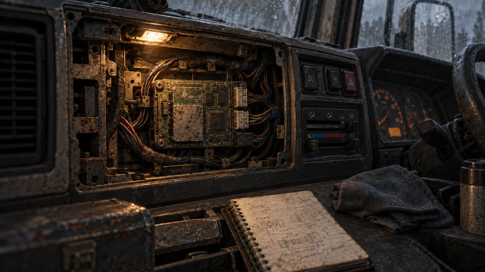
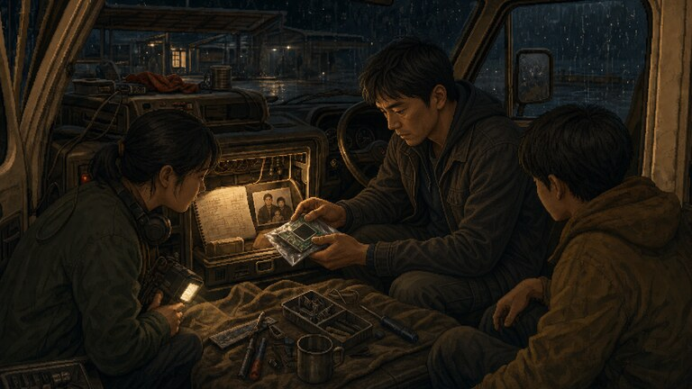

6차 이야기·그림 검증 / 교체 초안
아직 꺼내지 않은 검증키.
분리 절차 두 장을 찾기 전입니다. 검증키는 계기판 안에 연결된 채 있고, 주인공은 수첩과 배선 위치만 확인합니다.
검토용 초안 · 사용자 승인 · 게임 소스 연결 · 실제 화면 적용·크롭 확인 대기
story_family_key / main_recovery_story_family_key
지금 할 수 있는 일만 보여 주기

본문: “반도체 모듈도 배선에 연결된 채 남아 있었다. 뜯긴 두 장 없이는 어느 커넥터부터 풀어야 할지 알 수 없었다.”
수원 보충 경로도 같은 달구지에서 배선을 비교합니다. 사진·수첩·모듈을 꺼내는 시점을 그림 때문에 앞당기지 않습니다. 가족사진은 화면 밖에 있습니다.
현재 게임 그림과 비교

다음 그림 검증 범위
남산 중턱의 밤·새벽 구도와 별도 정비 단말은 7차 교체 초안3장, 수원 상자는 9차 전용 그림 초안으로 이어집니다. 모두 아직 게임에 연결하지 않았습니다. 이 초안으로 전체 사진 검수가 끝난 것은 아닙니다.
원본은 보존했습니다. 새 그림은 실제 미리보기 자산 갤러리에만 추가하며, 승인과 해당 장면의 실제 크롭 확인 전에는 사건에 연결하지 않습니다.